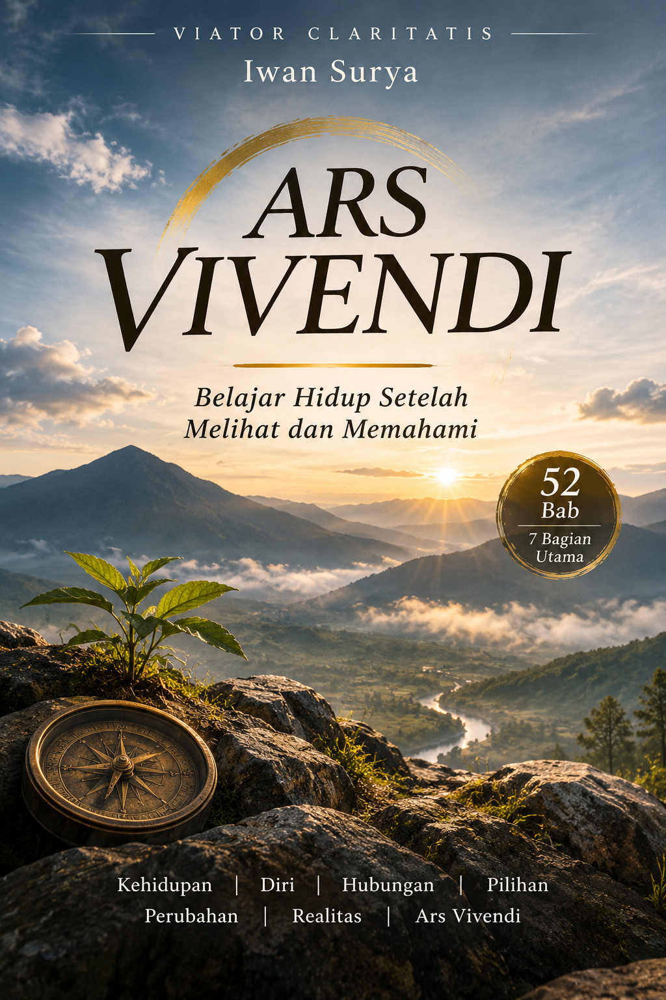
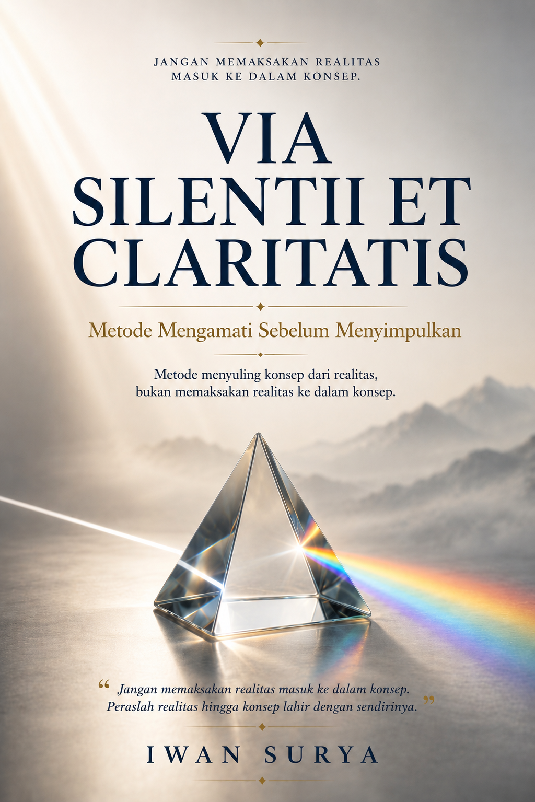

Galeri Aset viator claritatis
Periksa gambar dan nama file. Kirim tangkapan layar atau sebut nomor gambar beserta halaman/karya tempat gambar itu harus digunakan. Tidak perlu mengganti nama file.








Periksa gambar dan nama file. Kirim tangkapan layar atau sebut nomor gambar beserta halaman/karya tempat gambar itu harus digunakan. Tidak perlu mengganti nama file.

